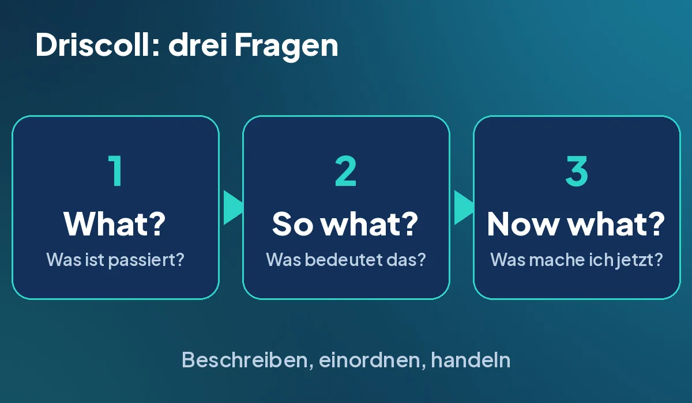
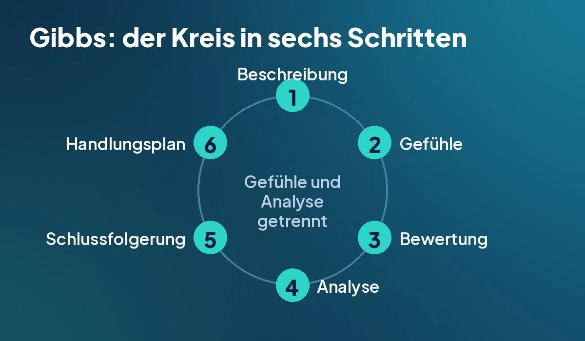
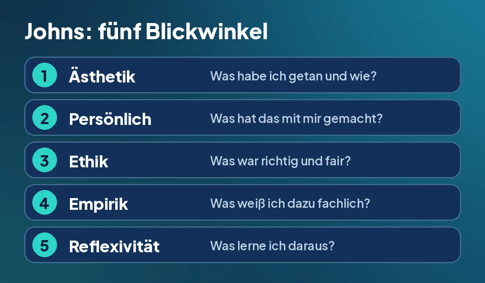

In der zweiten Folge des Podcasts habe ich über Selbstreflexion gesprochen und drei Modelle vorgestellt. Hier könnt ihr alles in Ruhe nachlesen. Zu jedem Modell gibt es einen kurzen Überblick, ein Bild und ein ausgedachtes Beispiel. Die Beispiele sind frei erfunden und enthalten keine echten Personen oder Einrichtungen.
Was bedeutet Reflexion?
Reflexion heißt, dass ich über das nachdenke, was ich erlebt und getan habe, und daraus etwas für das nächste Mal mitnehme. Es ist kein Grübeln (kreisendes Nachdenken ohne Ergebnis). Am Ende steht etwas Brauchbares, zum Beispiel ein anderes Vorgehen beim nächsten Mal.
Ein Reflexionsmodell ist ein festes Schema, das die Denkschritte vorgibt. Es nimmt mir die Frage ab, wo ich anfangen soll.
Driscoll: drei Fragen für den schnellen Alltag
Das Modell von Driscoll besteht aus drei Fragen, die man sich leicht merken kann: „What?“ (Was ist passiert?), „So what?“ (Was bedeutet das?) und „Now what?“ (Was mache ich jetzt?). Es passt, wenn es schnell gehen muss, zum Beispiel nach einer stressigen Übergabe (Informationsweitergabe zwischen zwei Schichten) oder nach einem Konflikt im Zimmer. Man braucht keine Vorbereitung, die Fragen kann man sich schon auf dem Heimweg stellen.

- What? Ich beschreibe kurz die Fakten, ohne zu bewerten.
- So what? Ich überlege, was das bedeutet, für mich und für den Menschen, den ich pflege. Dazu gehören Gefühle, Reaktionen und Auswirkungen (Analyse heißt, etwas in seine Teile zu zerlegen und zu deuten).
- Now what? Ich lege konkrete Schritte für das nächste Mal fest.
Ausgedachtes Beispiel: Nach der Übergabe merke ich, dass bei einer Bewohnerin das Trinkprotokoll (Liste, in der die Trinkmenge eines Tages eingetragen wird) nicht ausgefüllt wurde. What: Ich habe die Trinkmenge im Stress nicht eingetragen. So what: Ohne Eintrag fehlt dem nächsten Dienst die Information, und die Bewohnerin hätte zu wenig trinken können, ohne dass es jemand merkt. Now what: Ich trage die Menge künftig direkt nach dem Getränk ein und frage in der Übergabe aktiv nach dem Protokoll.
Gibbs: der Zyklus für belastende Situationen
Der Zyklus von Gibbs hat sechs Schritte und eignet sich für emotionale oder belastende Erlebnisse, zum Beispiel Tod, Schmerz oder ein ethisches Dilemma (schwierige Zwangslage, in der jede Entscheidung Nachteile hat). Seine Besonderheit ist, dass er die Gefühle (Schritt 2) von der Analyse (Schritt 4) trennt. So blockieren die Gefühle die Analyse nicht, und ich bleibe nicht in Schuldgefühlen oder Frust hängen. Am Ende steht immer ein konkreter Handlungsplan.

- Beschreibung (Description): Was ist passiert, möglichst genau?
- Gefühle (Feelings): Wie ging es mir, wie habe ich reagiert, wie haben andere reagiert?
- Bewertung (Evaluation): Was war gut, was war schlecht? Möglichst sachlich bleiben.
- Analyse (Analysis): Was kann ich aus der Erfahrung ableiten? Wenn möglich, andere einbeziehen.
- Schlussfolgerung (Conclusion): Was habe ich gelernt, was hätte ich anders machen können?
- Handlungsplan (Action plan): Was mache ich beim nächsten Mal?
Ausgedachtes Beispiel: Ein Bewohner, den ich einige Wochen begleitet habe, verstirbt im Spätdienst. Ich bin bei ihm, die Fachkraft ist auf dem Weg. Gefühle: Ich bin traurig und fühle mich hilflos, merke aber auch, dass ich einfach funktioniere. Bewertung: Gut war, dass ich ruhig geblieben bin, seine Hand gehalten und rechtzeitig die Fachkraft gerufen habe. Weniger gut war, dass ich mich danach sofort in Aufgaben gestürzt habe. Analyse: Ich habe gelernt, unter Belastung zu funktionieren. Das hilft im Moment, kann aber dazu führen, dass Gefühle liegen bleiben. Schlussfolgerung: Ich brauche nach so einem Erlebnis Zeit zum Verarbeiten. Handlungsplan: Beim nächsten Mal bitte ich um fünf Minuten für mich und frage nach einer kurzen Nachbesprechung im Team.
Johns: Leitfragen für Praxisanleitung und Fallbeispiele
Das Modell von Johns wurde für die Pflege entwickelt. Es ist geeignet, wenn komplexe Situationen gemeinsam mit der Praxisanleitung (Fachkraft, die Auszubildende im Einsatz begleitet) durchdacht werden, und für die schriftliche Darstellung von Fallbeispielen (Beschreibung einer einzelnen Pflegesituation). Es besteht aus fünf Kategorien mit Leitfragen, die das Erlebte aus verschiedenen Blickwinkeln beleuchten.

- Ästhetik (aesthetics): das gekonnte Wahrnehmen und Handeln in der Situation. Was wollte ich tun oder erreichen?
- Persönlich (personal): die eigene Person. Wie habe ich mich gefühlt?
- Ethik (ethics): die eigenen moralischen Überzeugungen. Wie passten meine Handlungen dazu?
- Empirik (empirics): Wissen aus Wissenschaft und Erfahrung. Welches Wissen hatte ich, und welches hätte geholfen?
- Reflexivität (reflexivity): Was lerne ich daraus, und was mache ich künftig anders?
Ausgedachtes Beispiel: Eine Bewohnerin lehnt die Körperpflege ab. Ästhetik: Ich wollte die Pflege vor dem Frühstück abschließen und habe mehrfach nachgefragt und ihre Hand genommen. Persönlich: Ich stand unter Zeitdruck und war unwohl, weil ich gespürt habe, dass sie sich bedrängt fühlt. Ethik: Ich finde, dass jeder Mensch über den eigenen Körper selbst bestimmt (Autonomie, also Selbstbestimmung). Mein Drängen hat dazu nicht gepasst. Empirik: Ich weiß aus der Schule, dass Ablehnung einen Grund haben kann, zum Beispiel Scham oder Schmerz. Ich hätte danach fragen können. Reflexivität: Beim nächsten Mal höre ich auf zu drängen, frage nach dem Grund und biete später einen neuen Versuch an. Passt der Zeitplan nicht, sage ich im Team Bescheid.
Welches Modell passt wann?
Das ist meine eigene Einordnung und keine feste Regel.
- Schnell im Alltag, zum Beispiel nach einer Übergabe oder einem Konflikt: Driscoll mit drei Fragen.
- Belastend oder emotional, zum Beispiel bei Tod, Schmerz oder einem ethischen Dilemma: Gibbs mit sechs Schritten.
- Gemeinsam mit der Praxisanleitung oder schriftlich als Fallbeispiel: Johns mit seinen Leitfragen.
Zwei Tipps dazu: Aufschreiben hilft mehr als nur Nachdenken, zum Beispiel in einem Reflexionsjournal (ein Heft oder eine Notiz mit kurzen, regelmäßigen Einträgen). Und wir müssen nicht allein bleiben, denn Gespräche mit der Praxisanleitung oder in einer Kollegialen Beratung (strukturiertes Gespräch unter Kolleginnen und Kollegen, in dem ein Fall gemeinsam besprochen wird) zeigen blinde Flecken.
Noch ein paar Worte von mir
Ich hoffe, den Hörern ist bei so einem trockenen Thema nicht langweilig geworden. Mir ist das Thema aber wichtig, weil wir nur durch Selbstreflexion unser Handeln hinterfragen, uns mit uns selbst auseinandersetzen und eine bessere Pflege für die Bewohner gewährleisten können. Das ist mein Gedanke dahinter.
Wenn jemand Fragen hat: Ich bin immer offen dafür, dass sich Menschen bei mir melden, und ich nehme mir dafür auch Zeit. Und wenn jemand seine Erfahrungen mit genau diesem Thema austauschen möchte, kann daraus auch eine Folge zu zweit werden. Mir hilft der Austausch zum Beispiel ungemein, mich selbst zu reflektieren.
Melde dich bei mir. Schreib mir gerne eine Mail an vollmer.steffen@icloud.com mit dem Betreff Pflegelaborblog. Bitte ohne Namen und Angaben zu Bewohnern. Die Folge findest du auf der Podcast Seite, mehr zum Mitmachen unter Mitmachen.